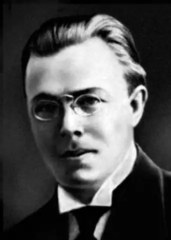

Микола Зеров
(26 квітня 1890 — 3 листопада 1927)
Визначний літературознавець пореволюцінної України, блискучий і відважний критик та полеміст, лідер славетної плеяди поетів, званої "неоклясиками", першорядний майстер сонетної форми і незрівнянний перекладач античної поезії. Народився 26 квітня 1890 року у місті Зіньків на Полтавщині. Батько його Кость був учителем, також займав посади в системі народної освіти. Микола Зеров учився в Охтирській гімназїї до 1903, середню освіту завершив 1908 року в київській гімназії. Закінчив з добрим успіхом історико-філологічний факультет Київського університету. До 1917 року вчителював у Злотопільській, а з 1917 — в 2 Київській гімназії. Водночас бере активну участь в українському літературному житті, що вийшло з підпілля в революції 1917, виступає як критик, редагує зразково бібліографічний журнал "Книгар" (1919 — 1920). Упродовж 1920-их років був професором літератури в Київському університеті, співробітником Академії наук, редактором багатьох книжкових видань. Друкуватися почав 1912 в журналі "Світло", з 1913 року був співробітником газети "Рада". З першими поезіями (переклади) виступив 1918 року. За його життя вийшло дві поетичні збірки: АНТОЛОГІЯ АНТИЧНОЇ ПОЕЗІЇ, переклади з Катулла, Вергілія, Горація, Проперція, Овідія, Марціяла (Київ, в-во "Друкар"; 1920, 63 стор.), КАМЕНА, поезії (Київ, в-во "Слово", 1924, 80 стор.). Дуже рано потрапив під постійний вогонь партійної офіційної критики. Тому його поетична творчість повніше могла бути видана тільки після його загибелі. На еміграції майже всі його сонети (85 оригінальних і 28 перекладних) видані в одному томі Sonnetarium (Берхтесгаден, в-во "Орлик", 1948, 196 стор.). Решта поезій, що їх вдалося зібрати, видані в збірці САТАLEPTON (Філядельфія, США, в-во "Київ", 1951, 79 стор.) та COROLLARIUM (переклади, рецензії і листи, Мюнхен, 1958). Хоч життьовий шлях Зерова був обірваний на середині, він устиг видати методологічно оригінальний історико-літературний нарис НОВЕ УКРАЇНСЬКЕ ПИСЬМЕНСТВО, вип. І (Київ, в-во "Слово", 1924, 135 стор.), а також багато статей з історії і теорії літератури та літературно-критичних і полемічних статей, частина яких була видана книжкою ДО ДЖЕРЕЛ, літературно-критичні статті (Київ, в-во "Слово", 1926, 131 стор. — друге, значно пізніше, але теж не повне, видання цієї збірки було у Львові 1943, 272 стор.). Також книжка ВІД КУЛІША ДО ВИННИЧЕНКА. Нариси з новітнього українського письменства. (В-во "Культура", Київ, 1929). Як поет і перекладач і як літературознавець та критик Зеров вирізнявся на тлі збуреного і скаламученого до дна революцією літературного життя в Радянській Україні, як твердий і блискучий алмаз. Високорозвинений естетичний смак, невпинно ростуча багата ерудиція, тонкий нещадний ум і культивоване серце позначались в його поезіях і в наукових та критичних працях. Противники без міри закидали йому як поетові літературщину, книжність, брак емотивної струни, втікання від сучасности. Вони ігнорували той факт, що під панцирем далеких тематичних мотивів античних і філософських ремінісценцій в поезії Зерова бив чуткий пульс сучасника, у якого тонка мисль і порух культивованого серця давали чарівний стоп поетичного твору. Зеров бачив небезпеку для України російської революційної психології, головна ірраціональна пасія якої була зруйнувати все попереднє до тла. На Україні ця психологія, опинившись в ролі військово-політичного окупанта, діяла як свідомий плян нищення всіх тисячолітніх набутків і скеровань нації. Зеров бачив культурно-історичну місію українського відродження також у тому, щоб переймати і розвивати далі ліпші скарби антично-европейського культурного круга, до якого в його уяві історично належить Україна. З другого боку, він бачив страшну колоніяльну культурну відсталість свого народу, завдяки якій варварські антикультурні руїнні елементи легко брали гору. А оскільки він був не тільки спостережник, а й активний учасник свого часу, то і його статті, і чимало його сонетів таять у собі гостре вістря убивчої іронії чи й сатири і є яскравими пам'ятниками свого часу. Як педагог, науковець і критик — Зеров був нещадний до лінивого примітивізму й неуцтва та вимагав найвищого рівня. На здібнішу літературну і наукову молодь він мав величезний вплив, незалежно від її до нього особистих симпатій чи антипатій. Який активний був з нього сучасник — свідчить той факт, що він єдиний з такою великою відвагою і рішучістю підтримав революційний виступ Миколи Хвильового і інших членів ВАПЛІТЕ проти насильницької російсько-комуністичної культурної гегемонії в Радянській Україні. Строгий і опанований клясицист подав руку непогамовному романтикові, що накреслював перед українською молоддю візію великого українського відродження як явища загальнолюдського масштабу і значення. Яка вітальна сила була в цього лицаря культури — свідчить той факт, що він, висланий 1935 року в легендарно-страхітливий концтабір на Соловки, втративши єдиного сина, свободу і все найдорожче — в умовах жорстокого режиму, голоду, холоду й перевиснаження фізичною працею, — далі писав сонети і далі працював над перекладами Вергілієвої "Енеїди". Вістки про нього загубились серед масових розстрілів, що таємно відбувались у концтаборах СРСР в 1937 — 38 роках. Юрій ЛАВРІНЕНКО Українське слово. — Т. 1. — К., 1994.